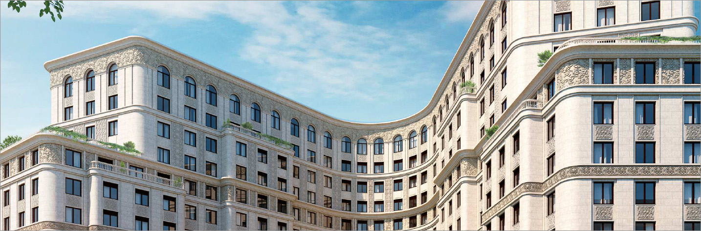

Архитектура

Исторический фасад 4RUBEL
сохраняет архитектурные каноны Москвы начала XX века. Мотивы модерна и геометрия неоклассицизма в облике здания
уверенно взаимодействуют с новым прочтением классики в роскошном интерьере лобби и общественных пространств от
Марселя Вандерса, живой легенды
современного дизайна.
Клубный дом 4RUBEL был введен в эксплуатацию в январе 2019 года. Помимо трех
пентхаусов к покупке на текущий момент доступно также несколько
квартир от 75 до 160 кв. м. Преимущества квартир 4RUBEL созданы для ценителей: собственные большие террасы с
открывающимися панорамными
видами на Кремль и центр Москвы, эксплуатируемая кровля, большие окна с французскими балконами, дровяные камины,
«тайный сад» (secret garden),
дизайнерский паркинг.
Сейчас в здании завершаются чистовые отделочные работы, завершается
благоустройство и озеленение, ведется подготовка документов для передачи
квартир собственникам.